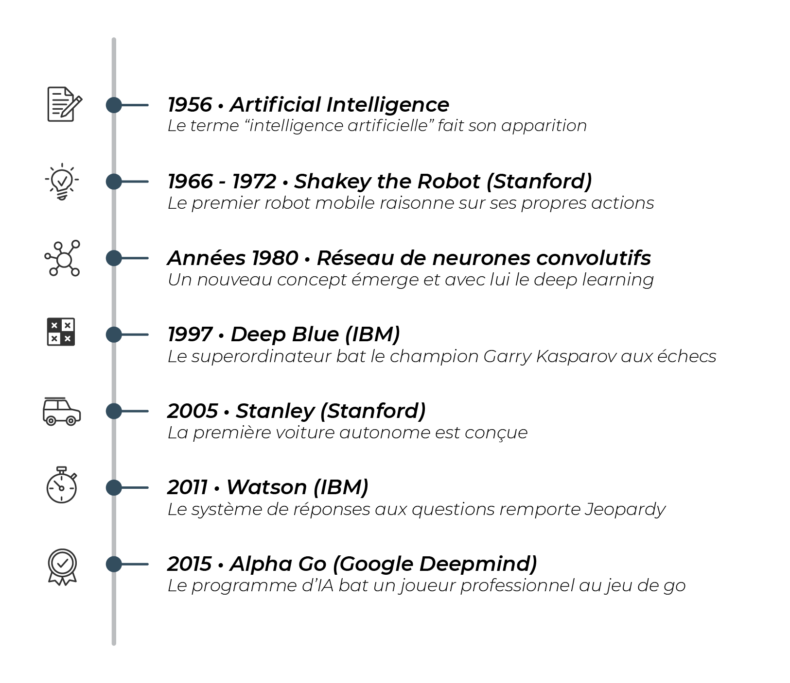

A la découverte de l'IA
L’intelligence artificielle ou l’IA (AI en anglais) , vous en entendez parler à la radio, à la télévision, et Internet propose des centaines de vidéos et d’articles sur cette thématique. Avec autant de sources d’information, pas facile de s’approprier le sujet !
Qu’est-ce que l’intelligence artificielle ? Dans quelle mesure est-ce que nous interagissons avec elle dans notre vie quotidienne ? Quels sont les défis et les opportunités associés à cette révolution ?
Dans un premier temps, on en apprendrez plus sur ce que recouvre vraiment l'intelligence artificielle. identifiera ensuite les changements que l'IA amène dans notre société. Enfin, on rentrera dans le fonctionnement d’un projet d'intelligence artificielle et des disciplines d’IA les plus utilisées : le Machine Learning et le Deep Learning.
- Détectons les applications de l'intelligence artificielle dans votre vie
- Repérons-nous dans le champ de l'intelligence artificielle
Google est sollicité près de 4 millions de fois
4,5 millions de vidéos sont visionnées sur YouTube
188 millions d’emails sont échangés.
- Resituons le potentiel de l'intelligence artificielle au-delà des mythes
- Découvrez les opportunités de l’intelligence artificielle
8 h : Un café, et c’est parti !
Il est 8 h du matin, vous naviguez peut-être sur un réseau social tel que Facebook, Instagram, LinkedIn ou Twitter. Quel que soit le réseau que vous utilisez, toutes ces plateformes appliquent des techniques d'intelligence artificielle à leurs services.
Vous faites défiler votre fil d’actualité pour découvrir les nouvelles du jour et les contributions de votre réseau. Savez-vous que votre fil d'actualité est unique ?
8 h 45 : Direction le boulot
Vous montez dans votre transport habituel pour rejoindre votre travail, et choisissez votre application musicale préférée, par exemple Spotify ou Deezer. En un clic, vous pouvez découvrir des dizaines de chansons et de podcasts recommandés ! Cette recommandation d’œuvres est permise par l’IA. Une sélection de contenus est suggérée en fonction de votre profil. Vous trouverez par exemple la liste de lecture "Découvertes de la semaine", ces nouveaux titres à écouter, mise à jour chaque lundi par Spotify. Pour constituer cette playlist, un programme d'IA a analysé vos écoutes récentes, et celles d’autres utilisateurs aux goûts proches des vôtres.
12 h 30 : À table !
Vous rejoignez vos collègues pour la pause déjeuner , et l’un d’eux vous propose de tester ce petit restaurant qui vient d’ouvrir au bout de la rue ! Vous acceptez et, pour faire baver vos amis, vous décidez de prendre une photo de votre dessert. Lorsque vous réalisez votre photo, l'appareil se calibre automatiquement en fonction de la scène qui va être photographiée. Derrière vos clichés réussis, il y a une application d’IA qui optimise les paramétrages de l'appareil photo pour vous.
Vous faites également une photo avec vos collègues préférés, et la postez sur les réseaux. Lorsque vous publiez votre photo, la plateforme vous suggère d'identifier les personnes présentes sur celle-ci.Si le cliché présente des individus qui font partie de votre cercle proche, leur identification vous est proposée automatiquement. L'identification des visages est aussi une fonctionnalité facilitée par l’IA.
13 h 45 : Un petit tour sur LinkedIn chaque jour, vous consacrez quelques minutes à votre réseau social professionnel. Cette application bien pratique vous permet de rester au fait des actualités de votre réseau. Vous êtes à la recherche d’un nouveau job ? Ce réseau peut vous faire des recommandations de postes. Pour ce faire, un programme d’IA a été conçu : il analyse votre profil professionnel en détail et identifie les offres d’emploi les plus pertinentes pour vous.
18 h : Retour à la maison quel que soit votre moyen de locomotion, vous vous appuyez sûrement sur des applis comme Google Maps ou Waze. Très pratiques, elles savent fournir des informations de trafic en temps réel. Mieux, elles savent désormais anticiper les retards (par exemple de bus ou de train). Pour cela, elles utilisent l’intelligence artificielle et les données disponibles (positions des bus en temps réel, météo, etc.).
19 h : Minute shopping
le e-commerce, c’est des millions de produits à portée de clic. Vous avez peut-être déjà effectué vos achats sur Cdiscount, la Fnac ou Amazon. Ces acteurs utilisent l’IA pour vous offrir la meilleure expérience d’achat.
Concrètement ? Ils travaillent par exemple sur la recommandation d’articles qui seront le plus pertinents pour vous.
Definition de l'intelligence artificielle :
Découvrez les quelques dates clés de la progression de l'IA sur cette frise :
Le jeu de go est un jeu de plateau d'origine chinoise où il s'agit de manipuler des pierres (noires et blanches) et de créer des "territoires" pour bloquer l'adversaire. Le jeu Jeopardy est un jeu télévisé d'origine américaine où il s'agit de deviner la question correspondant aux indices présentés.
Dirigez votre maison par la voix aujourd’hui, de plus en plus de personnes utilisent dans leur maison des appareils qu’ils commandent par la voix, comme des enceintes à commande vocale, ou des assistants comme Alexa ou Google Home...
Faites-vous conduire par un véhicule autonome le secteur des transports va bénéficier des dernières avancées. À la clé : plus d'optimisation et de fluidité. Par exemple, les flottes de taxis et VTC ont été réinventées avec des entreprises comme Uber ou Kapten (ex-Chauffeur Privé). Ainsi, les déplacements des chauffeurs sont optimisés. Les véhicules autonomes sont une prochaine révolution permise par l’IA qui promet de transformer le monde des transports.
De nombreux acteurs et équipementiers automobiles proposent des solutions "autonomes". En France, par exemple, EasyMile est un mini-bus autonome électrique. Autre exemple français, l’équipementier Valeo et son projet Drive4U, qui propose une voiture prête à arpenter les rues de Paris.
Les disciplines de l’intelligence artificielle permettent aux machines d’accomplir des tâches qu’on pourrait penser réservées aux humains. Pour bien cerner ce que recouvre la révolution de l’IA, il faut avoir en tête quelques concepts qui lui sont liés de près ou de loin ; entre autres : les données, le Big Data ou le Deep Learning.
Les données, ce sont ces informations qui sont enregistrées pour être utilisées par les programmes informatiques.
Chaque minute :
Ce sont toutes ces données qui forment le concept de Big Data. On pourrait le traduire par "données massives".
Il faut garder à l'esprit que c'est le volume de données considérables et les données diverses qui font l'ampleur du phénoméne du big data.
Pour analyser toutes les données collectées, ces fameuses données massives, ce fameux Big Data, les organisations vont avoir recours à une discipline transversale : la Data Science, ou science des données.
La Data Scientist analyse les données disponibles dans les moindres détails. Son objectif ? Comprendre les chiffres du passé pour expliquer les tendances de ventes en fonction de nombreux critères. Pour cela, elle doit cumuler plusieurs compétences :
des connaissances en mathématiques et en statistiques qui lui permettent d’analyser les chiffres ;
des compétences en informatique car elle doit être en mesure de traiter des quantités importantes d’informations ;
des compétences dans le secteur dans lequel elle intervient. Dans le cas de la mode, il faudra par exemple savoir analyser les mouvements de stock, la saisonnalité des ventes, etc.
L'apprentissage profond, ou Deep Learning, repose sur la construction de réseaux de neurones artificiels.
Ces réseaux, composés de milliers, voire millions de neurones, sont inspirés du cerveau humain. Le Deep Learning s’applique souvent sur des quantités de données beaucoup plus importantes que le Machine Learning. Il apprend de cette masse d’exemples et obtient dans certains cas de bien meilleurs résultats que les disciplines traditionnelles d’intelligence artificielle.
Le Deep Learning est particulièrement performant pour travailler avec des données vocales. Vous pouvez penser par exemple aux questions qui sont récoltées par des assistants virtuels. Ces signaux audio doivent être interprétés et traduits en texte avant de pouvoir trouver une réponse. C’est ce qu’on appelle le traitement automatique du langage naturel.
Il y a souvent une confusion entre intelligence artificielle et robotique. Effectivement, ce sont des domaines d’étude qui sont souvent présentés ensemble, car ils sont souvent tous les deux impliqués dans les mêmes projets.Alors, qu’est-ce qui les distingue ?La robotique correspond à la partie mécanique.
On peut donc avoir des robots qui fonctionnent sans IA, comme par exemple les robots industriels, dont le comportement est programmé de A à Z par un humain. On peut aussi avoir des IA qui ne sont pas implémentées dans des robots, comme c’est le cas des assistants vocaux de nos téléphones.
Mythe n° 1 : "Les programmes d’IA sont supérieurement intelligents aux humains"
Les intelligences artificielles accomplissent des exploits remarquables. Cela étant, il faut garder à l’esprit que les intelligences artificielles ne copient pas le cerveau. Le cerveau est une source d’inspiration pour les chercheurs.Si vous n’êtes pas un robot, vous êtes doté d’un sens commun.
Les chercheurs font souvent la distinction entre l'IA étroite et l'IA générale. L'IA étroite est construite de telle sorte qu'elle est très performante sur une tâche précise.
Mythe n° 2 : "L’IA fonctionne comme le cerveau humain"
Il faut garder à l’esprit que le fonctionnement de l’IA est éloigné de celui du cerveau humain. Il ne s’agit pas d’une copie ou d’une simulation du cerveau humain.
L'intelligence peut être mesurée sous différents angles. S’il s’agit de la capacité à faire des opérations mathématiques rapidement ou d’avoir une mémoire considérable, les intelligences artificielles nous dépassent largement. En revanche, il y a d’autres compétences qu’elles n’auront vraisemblablement pas avant longtemps. Par exemple, elles ne sont pas encore capables de ressentir des émotions, de faire preuve d’empathie ou d’humour.
Mythe n° 3 : "Les programmes d’IA sont conscients et auraient des émotions"
Des robots capables de joie et de tristesse ? En apparence seulement. Certes, on peut doter les machines de toutes sortes d’émotions, mais il faut garder à l’esprit qu’elles ne font que les simuler.
Mythe n° 4 : "Les programmes d’IA pourraient prendre le pouvoir"
Le comportement d'un programme d'IA relèvera en priorité de la responsabilité de l'humain lorsqu'il a été conçu.
L’intelligence artificielle est une technologie prometteuse. Et si on s’en servait pour œuvrer au bien commun ? De nombreux acteurs se sont déjà saisis de cette opportunité technologique. Leur objectif ? Répondre à des défis de société majeurs, notamment dans les domaines de la santé, l’éducation et l'environnement. La force de ces projets est de combiner des expertises variées : chercheurs en intelligence artificielle, experts sectoriels, citoyens et entrepreneurs.
Parmi les initiatives les plus visibles, on peut citer celle des Nations Unies : "AI for Good" ("l’IA pour le bien commun"), un sommet mondial organisé chaque année depuis 2017 pour mettre en lumière les initiatives les plus prometteuses permises par les utilisations de l’intelligence artificielle.
Détecter les maladies plus tôt. l’algorithme permet de dépister un risque de cancer du sein jusqu'à quatre ans avant qu’il ne soit visible à l’image par un œil humain.
L’algorithme permet de dépister un risque de cancer du sein jusqu'à quatre ans avant qu’il ne soit visible à l’image par un œil humain.
La force de ce projet, c’est le nombre d’images qui permet d’entraîner le système à dépister cette pathologie. Au total, le système repose sur 60 000 patientes et 90 000 images ont été numérisées.En fait, le programme ne fait pas que détecter le cancer quand il est visible. Il a aussi été développé pour calculer très en amont le risque que celui-ci survienne dans les prochaines années et cibler les femmes les plus à risque. C'est donc un vrai atout dans le domaine de la prévention.
Faciliter la prise de décision médicale. L’IA peut également s’avérer utile après la détection d’une pathologie. Le projet européen DESIREE vise précisément à fournir un système d’aide à la décision pour le médecin. Concrètement, le logiciel se base sur l’observation de milliers de cas de cancer. Ce système analyse les renseignements sur un patient donné, à la lumière de toutes ses connaissances sur les cas passés.
La force de ce système est de s’enrichir en permanence de nouveaux cas pour personnaliser le plus possible le traitement proposé. Chaque patient est différent, et plus le traitement sera personnalisé, plus les chances de guérison augmenteront. Concrètement, l'IA aide le praticien à prendre la meilleure décision pour le patient.
Favoriser l’accès à la santé au plus grand nombre. Lorsqu’un patient ne parle pas (ou très peu) le français, disposer d’un interprète devient essentiel. Les traducteurs bénévoles ne sont pas toujours disponibles quand c’est nécessaire.
L’initiative "Banlieues Santé" s’appuie sur les progrès récents de l’IA dans le traitement du langage. Cette ONG a développé un algorithme qui est une référence pour la traduction de dialectes dans un contexte médical.
L’idée est donc de s’appuyer sur une application pour smartphone qui traduit en temps réel les dialogues entre patients et professionnels de santé. Cet assistant permet à la fois de traduire en temps réel des langues rares, mais aussi de comprendre les concepts médicaux.
Voici à travers images l'utilité , les domaines et utilisations de l'ia

Les étapes d'un projet de résolution avec l'IA :
Analyse > Récupération > Nettoyage > Exploration > Modélisation > Evaluation & Interprétation > Mise en production > Maintenance